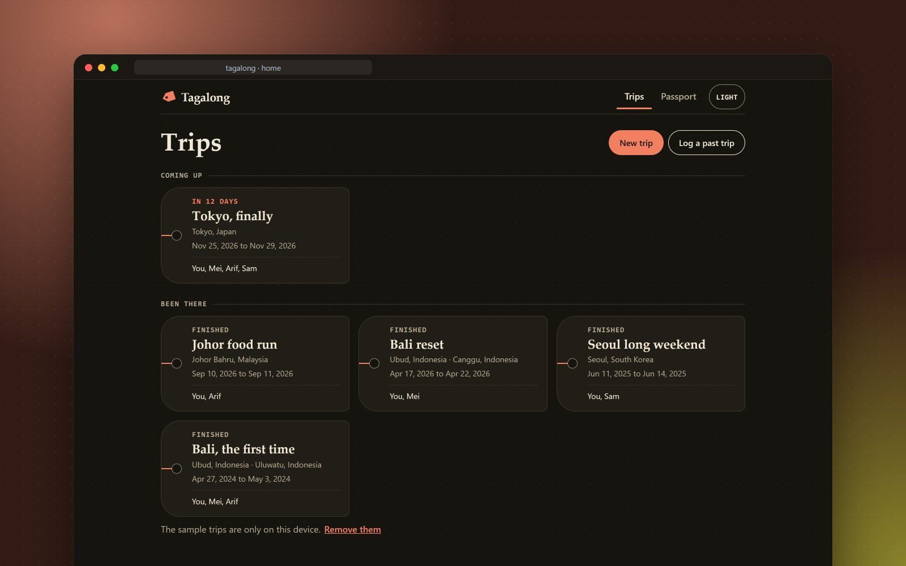
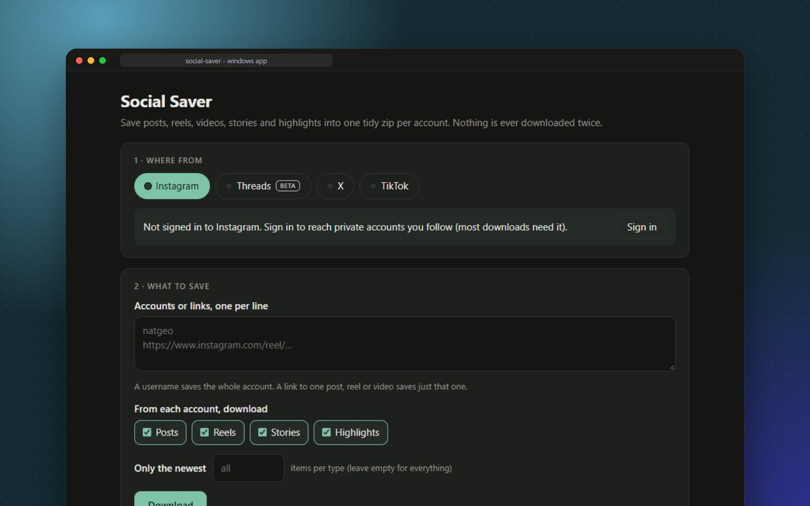
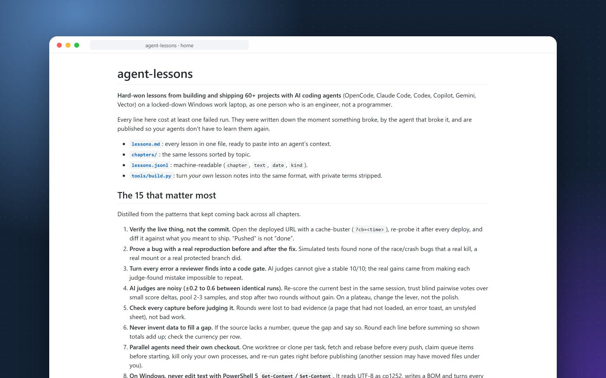
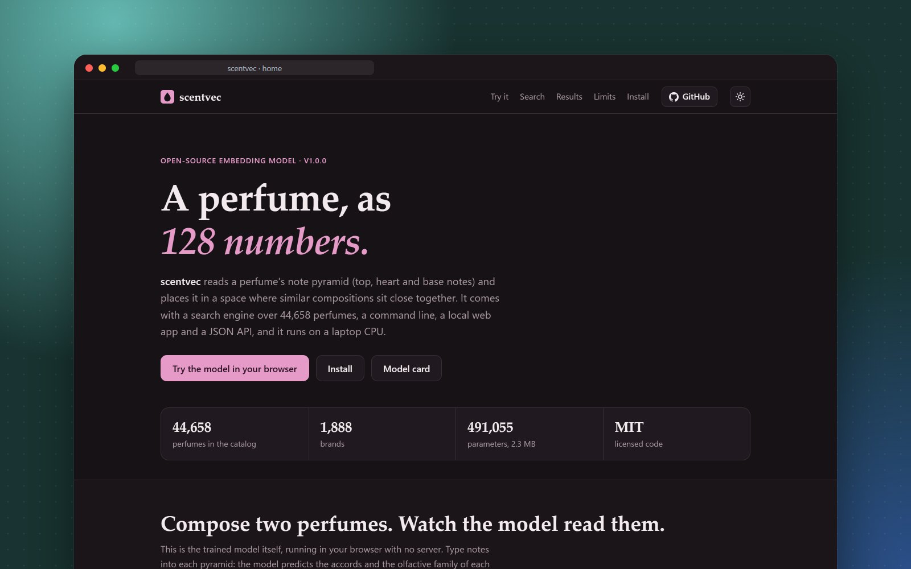
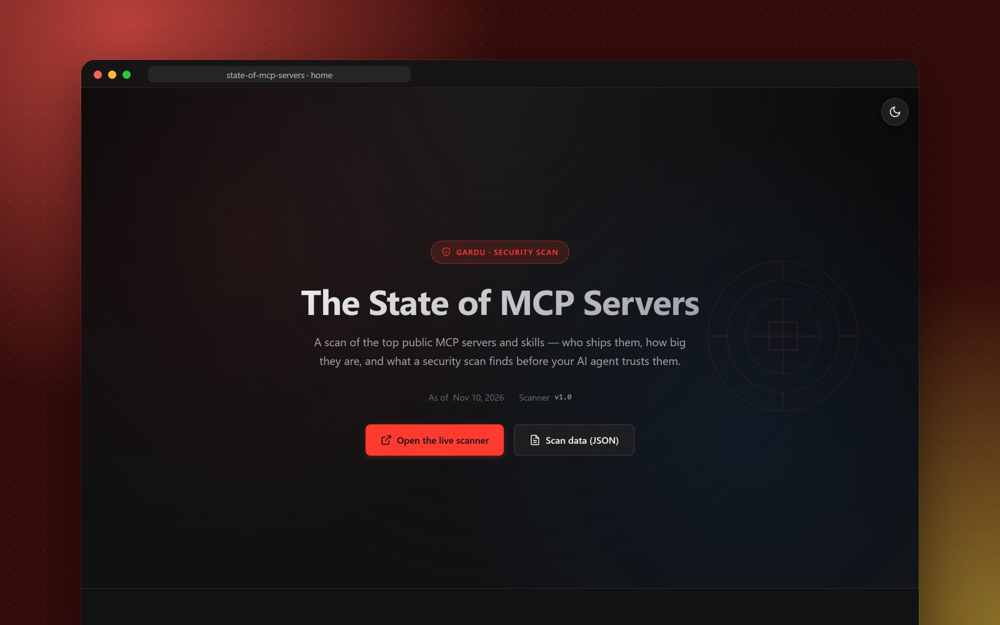
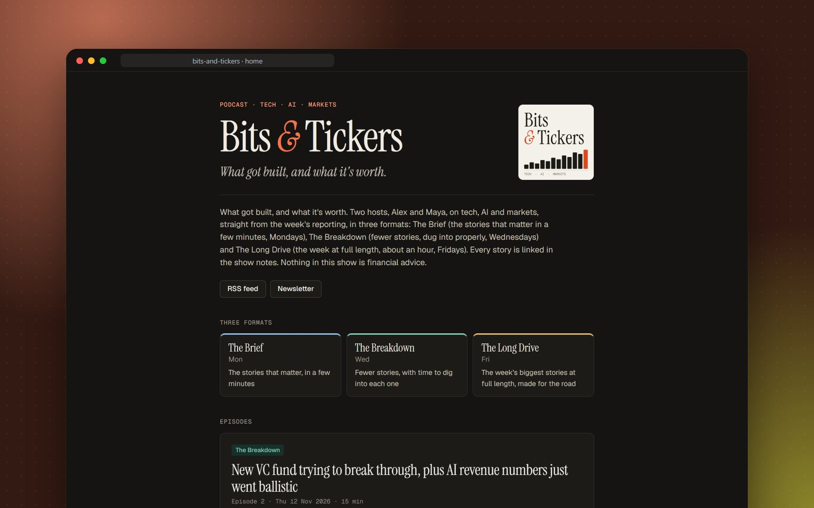
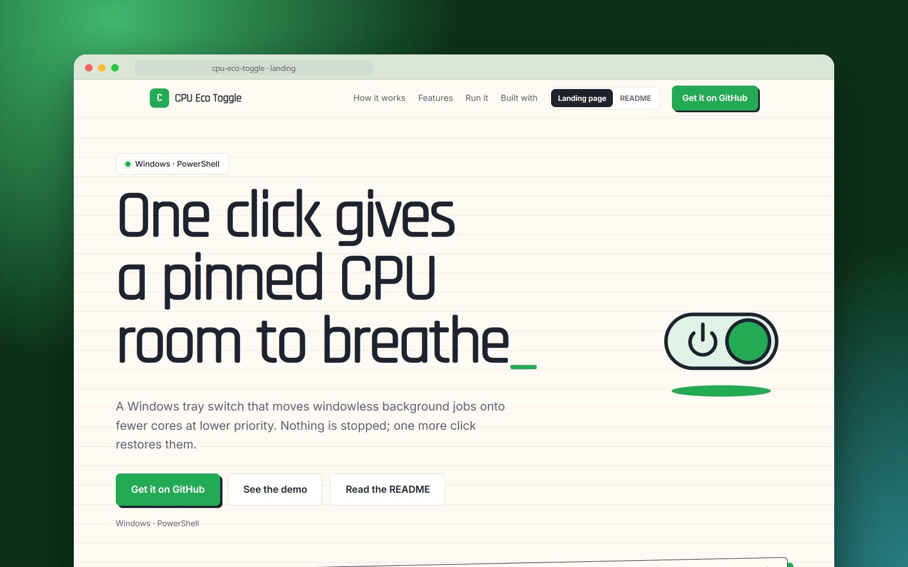

Last shipped 13 Nov 2026 · Tagalong
Build log.
71 builds · newest first
Engineering tools, CAD models and side projects I’ve shipped. Get one short email when the next one lands.
No spam · unsubscribe in one click · past issues · RSS
- Dwg no.
- JL-002
- Builds
- 71
- Rev
- 26.11.13
- Cadence
- When it ships
Latest build

Tagalong
Group trip planner: vote on ideas, build the days and split the bills to the cent.
Open project →All builds #70 → #42
- #7013 Nov 2026
Social Saver
Save posts, reels, stories and highlights from Instagram, Threads, X and TikTok into one tidy zip per account.
Open →
- #6913 Nov 2026
agent-lessons
675 lessons from shipping 60+ projects with AI coding agents
Open →
- #6813 Nov 2026
scentvec
Perfume embedding model: note pyramids become 128-d vectors to find similar perfumes or blend two.
Open →
- #6713 Nov 2026
The State of MCP Servers
A Gardu security scan of the top public MCP servers and skills. Open data, reproducible.
Open →
- #6613 Nov 2026
Bits & Tickers
A tech, AI and markets podcast in three formats, every story linked in the show notes.
Open →
- #6512 Nov 2026
CPU Eco Toggle
One-click Windows tray switch that moves background jobs to fewer cores at lower priority, without stopping them.
Open →
- #6411 Nov 2026
Kilat
A small programming language for engineering calculations: units and types are checked before a program runs.
Open →
- #6311 Nov 2026
Who Threw?
Settle who threw your Mobile Legends match.
Open →
- #6210 Nov 2026
Inti
A from-scratch Rust microkernel OS you can break on purpose: crash a driver in the browser and watch it restart.
Open →
- #6110 Nov 2026
Jepret
Photos in, stock upload files out
Open →
- #6010 Nov 2026
Ruang
Room photo to priced 3D plan, with an architect that fixes what it flags
Open →
- #5910 Nov 2026
Hexbane
Break the hex: scan AI agent skills and MCP servers before you trust them
Open →
- #5810 Nov 2026
Reda
Chronic hives companion: daily UAS7 check-in, trigger finder, photo-guided self-tests and a guideline medicine plan.
Open →
- #5709 Nov 2026
Mise
A quiet kitchen game with live-synthesised ASMR sound.
Open →
- #5608 Nov 2026
PocketDex
A calm pixel Pokedex you use every day: habits, focus, a partner with feelings, web or Windows app.
Open →
- #5508 Nov 2026
Hoki
A calm, waving Chinese lucky cat for your phone home screen and Windows desktop. Tap it for a luck boost.
Open →
- #5408 Nov 2026
Lahap
Snap a meal, keep just the food, see protein and calories against your goal, and cook from what is in the fridge.
Open →
- #5308 Nov 2026
Riak
Cozy aquarium PWA: care for a living tank, flick-cast at nine spots, grow a greenhouse, breed corals.
Open →
- #5208 Nov 2026
Trunnion TopOpt
Topology-optimised A-axis trunnion upright for a 5-axis 3D printer, checked by fine-mesh FE.
Open →
- #5108 Nov 2026
Bilas
A quiet first-person 3D coin laundry with synthesized ASMR.
Open →
- #5007 Nov 2026
Teduh
Free, cozy solarpunk life sim on floating islands, offline in any browser.
Open →
- #4907 Nov 2026
Nongkrong
A 3D warung and cafe for your city. Sit at a table; only your table can read or hear you.
Open →
- #4807 Nov 2026
Meetline
Find the fairest place for 2-8 people to meet.
Open →
- #4707 Nov 2026
precedent
Stops false "I can't"s and unchecked "done"s in AI coding agents.
Open →
- #4607 Nov 2026
Vow
Free, private commitment app: stake a promise, name a witness who signs your check-ins, pay your cause if you miss.
Open →
- #4507 Nov 2026
Nadaku
Offline HSK 1-6 Mandarin app for Indonesian speakers, with native audio and a tone mirror.
Open →
- #4407 Nov 2026
gate
A merge gate for AI-agent code: parallel sessions in, tested and provenance-tagged commits out.
Open →
- #4307 Nov 2026
Batam Uncle Says
Batam day trips for Singaporeans, planned around your ferry and usable offline.
Open →
- #4207 Nov 2026
ReachPilot
Local hub for outreach bots: posts projects from real repo facts to LinkedIn, Bluesky, Mastodon, Dev.to, X, Threads and Substack, plus job search and e-mail applications.
Open →
Next build drops in your inbox.
One email per ship. Nothing else.